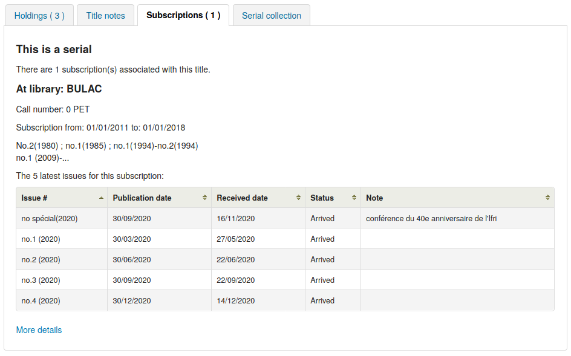
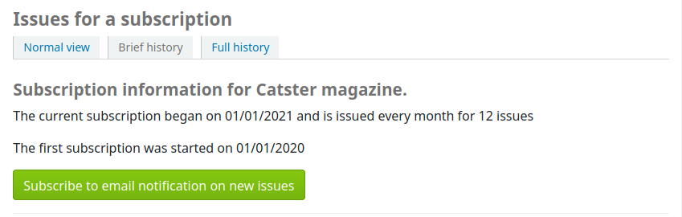
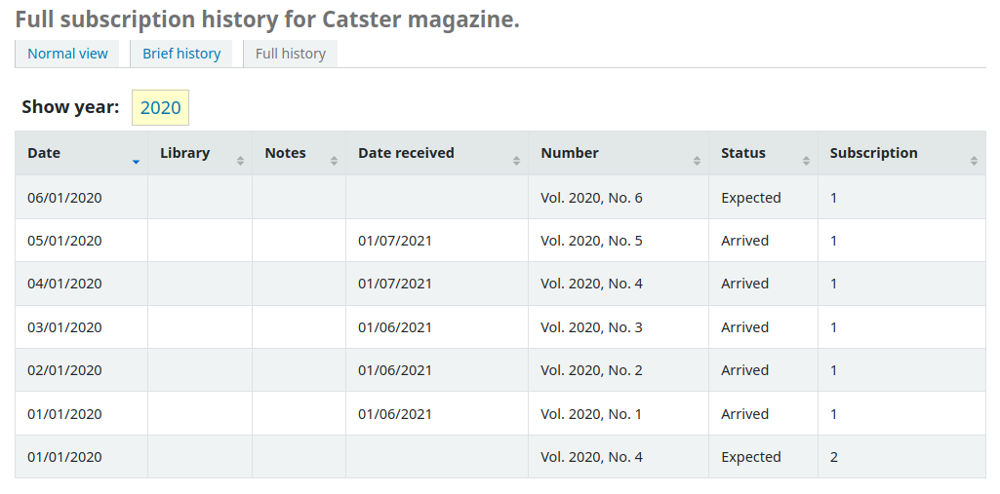

Serials
Get there: More > Administration > Global system preferences > Serials
makePreviousSerialAvailable
Asks: ___ previous serial automatically available when receiving a new serial issue. The previous issue can also be set to another item type when receiving a new one. Please note that the item-level_itypes system preference must be set to specific item.
Default: Don’t make
Values:
Don’t make
Make
Description:
If this preference is enabled, the not for loan status and the item type of the previous issue will be automatically changed when receiving a new issue.
The item type of new issues and item type for previous issues are set when creating the serial subscription.
This is useful for libraries that don’t circulate the latest issue of a serial, but circulate previous issues.
opacSerialDefaultTab
Asks: Show ___ as default tab for serials in OPAC.
Default: subscriptions tab
Values:
holdings tab
The holdings tab is the one that shows items attached to the bibliographic record. It is the one shown for records with no subscriptions attached.
serial collection tab
警告
Please note that the serial collection tab is currently available only for systems using the UNIMARC standard.

subscriptions tab

Description:
This system preference allows you to choose which tab user will see first when viewing a bibliographic record with a subscription attached in the OPAC.
When using the subscription tab, you can choose how many issues to show with the OPACSerialIssueDisplayCount system preference.
OPACSerialIssueDisplayCount
Asks: Show the ___ previous issues of a serial on the OPAC.
Default: 3
Description:
This preference allows the administrator to select the number of recent issues for each serial which appear in the OPAC when the serial is accessed. This is just the default value, patrons can always click to see a full list of serials.
注解
This does not affect the number of items shown in the ‘Holdings’ tab if you create items for issues. It only affects the number of issues displayed in the ‘Subscriptions’ tab.
You can choose which tab users see first with the opacSerialDefaultTab system preference.
The number of issues shown can also be set for individual subscriptions when creating or editing serial subscriptions.
PreserveSerialNotes
Asks: ___ prefill the notes from the last ‘Arrived’ serial when generating the next ‘Expected’ issue.
Default: Do
Values:
Don’t
Do
Description
This system preference allows you to choose whether or not you want to copy notes from the previous issue of a serial to a new issue, when receiving a new issue, saving time for staff.
RenewSerialAddsSuggestion
Asks: ___ a suggestion for a biblio when its attached serial is renewed.
Default: Don’t add
Values:
Don’t add
Add
Description:
If set to ‘Add’, this preference will automatically add a serial to the purchase suggestions page in the acquisitions module when clicking the ‘renew’ option on a serial subscription. If you don’t use the acquisitions module to manage serials purchases it’s best to leave this set as ‘Don’t add’.
RoutingListAddReserves
Asks: ___ received serials on hold if they are on a routing list.
Default: Don’t place
Values:
Place
Don’t place
Description:
When using the routing list feature, items for issues to be routed can be placed on hold for each user on the routing list.
RoutingListNote
Asks: Include following note on all routing lists
Description:
Text entered in this box will appear below the routing list information.
RoutingSerials
Asks: ___ the routing list feature in the serials module.
Default: Use
Values:
Don’t use
Use
Description:
This preference determines if serials routing lists are enabled or disabled for the library. When set to ‘Use’, serials routing is enabled and a serial can be directed through a list of people by identifying who should receive it next. The list of people can be established for each serial to be passed using the Serials module. This preference can be used to ensure each person who needs to see a serial when it arrives at the library will get it. Learn more in the routing list section of this manual.
StaffSerialIssueDisplayCount
Asks: Show the ___ previous issues of a serial on the staff interface.
Default: 3
Description:
Description:
This preference allows the administrator to select the number of recent issues for each serial which appear in the staff interface when the serial is accessed. This is just the default value, staff members can always click to see a full list of serials.
注解
This does not affect the number of items shown in the ‘Holdings’ tab if you create items for issues. It only affects the number of issues displayed in the ‘Subscriptions’ tab.
The number of issues shown can also be set for individual subscriptions when creating or editing serial subscriptions.
SubscriptionDuplicateDroppedInput
Asks: List of fields which must not be rewritten when a subscription is duplicated (Separated by pipe |) ___
Description:
When duplicating a subscription (new as duplicate) sometimes you don’t want all of the fields duplicated. Using this preference you can list the fields thatyou don’t want to be duplicated. These field names come from the subscription table in the Koha database. Learn what fields are in that table on the Koha DB Schema site.
SubscriptionHistory
Asks: When showing the subscription information for a bibliographic record, preselect ___ view of serial issues.
Default: brief history
Values:
brief history

full history

Description:
This preference determines what information appears in the OPAC when the user clicks the ‘more details’ option. The ‘brief’ option displays a one-line summary of the volume and issue numbers of all issues of that serial held by the library. The ‘full’ option displays a more detailed breakdown of issues per year, including information such as the issue date and the status of each issue.